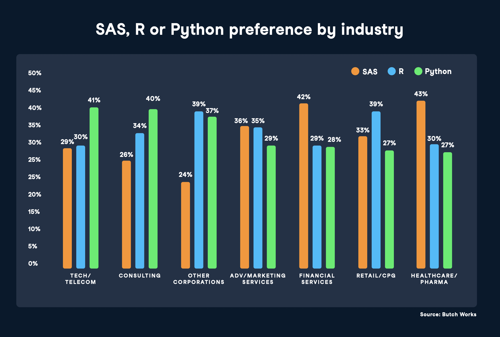

Integração R e Python
um caso de amor (e ódio)
Tech Stack


Estrutura da apresentação
Motivação
Introdução à linguagem python
Integração R/python
Equivalências do da disciplina no python
ML com scikit-learn no R
Uma briga (quase) superada …
Criado / Lançado em 1993/1995 e mantido pela R-Foundation
Estatísticos da Universidade de Aukland, NZ
Robert Gentleman, Ross Ihaka, S Language
Criado/Lançado em 1989/1991, mantido pela Python Sftware Foundation
Por pelo programador holandês Guido van Rossum
Que aparentemente gostava muito de Monty Python
Uma briga (quase) superada …
Qual vocês acham que é o R?
Uma briga (quase) superada …
Fonte: DataCamp

Cientista chefe na RStudio (futura Posit)
“Não é uma batalha […] use o que te faz feliz!” , 2019
Diferenças, vantagens, desvantagens….
R
Usuários: Acadêmicos, estatísticos, biólogos, economistas …
Modelos em poucas linhas, possibilidade de escrever de várias formas.
Estatística e visualização (ggplot2!)
CRAN, GitHub: + pacotes, + fáceis de instalar e mais documentados.
Python
Usuários: Cient. computação, Eng. software …
Sensível a indentação.
ETL/ML workflows e ambientes de produção escaláveis
Pacotes/dependências mais “chatinhos”
E porque integrar R/python afinal?
Argumento 1: Uma pode ser melhor que a outra para um determinado problema.
Python melhor:

- 2012: todos os requisitos.
- Resumindo: O foco é resolver o problema. Leia o post.
E porque integrar R/python afinal?
Argumento 1: Uma pode ser melhor que a outra para um determinado problema.
R melhor:


E porque integrar R/python afinal?
Argumento 2: A sua equipe pode ter pessoas de diferentes linguagens.

(ou uma mistura dos dois!)
Exemplos
1) A preparação dessa apresentação
2) Esta apresentação no rstudio::conf(2022)
Diversidade de pensamento
Mais chances de encontrar a melhor solução para um problema de forma mais eficiente. Leia
Basicamente …
A RStudio correu atrás
RStudio: A Single Home for R and Python.
Pacote reticulate.
Quarto: (algo incr√≠vel aconteceu üò±)
outros produtos…
Ah, uma parte dessa introdução desse seminário foi inpirado apresentação da Bea Milz.
Então, vamos aprender um pouco de python agora?
Download Python
(Não é tão trivial quanto o R)
- Mais opções de IDE:
- Visual Studio Code
- Pycharm
- Spyder
- Jupyter
Opções de download do python
- ANACONDA
- Também é possível baixar pelo python.org
Instale no PATH, ou sofra as consequências


Vantagens do ANACONDA
- Já vem com os principais pacotes para ciência de dados.
- Pandas
- Numpy
- Seaborn
- Scikit-learn
- etc.
- Também vem com o Jupyter.
Jupyter
- Interface amigável.
- Funciona no seu navegador padrão.
- Possibilidade de escrita de textos com Markdown.
- Execução e visualização da saída do código em cada célula.
- Vários atalhos para melhorar a produtividade.
- Ótima ferramenta para exploração.
Reticulate: O pacote da trégua
Scripts do Python no R
- Execução de scripts do Python interagindo com a sessão do R;
- Tradução entre objetos do R e do Python (como entre data frames do R e do Pandas);
Reticulate
Lista de comandos
[1] "%as%" "array_reshape"
[3] "as_iterator" "conda_binary"
[5] "conda_clone" "conda_create"
[7] "conda_exe" "conda_export"
[9] "conda_install" "conda_list"
[11] "conda_python" "conda_remove"
[13] "conda_update" "conda_version"
[15] "configure_environment" "dict"
[17] "eng_python" "import"
[19] "import_builtins" "import_from_path"
[21] "import_main" "install_miniconda"
[23] "install_python" "iter_next"
[25] "iterate" "miniconda_path"
[27] "miniconda_uninstall" "miniconda_update"
[29] "np_array" "py"
[31] "py_available" "py_bool"
[33] "py_call" "py_capture_output"
[35] "py_clear_last_error" "py_config"
[37] "py_config_error_message" "py_del_attr"
[39] "py_del_item" "py_dict"
[41] "py_discover_config" "py_ellipsis"
[43] "py_eval" "py_exe"
[45] "py_func" "py_function_docs"
[47] "py_function_wrapper" "py_get_attr"
[49] "py_get_item" "py_has_attr"
[51] "py_help" "py_help_handler"
[53] "py_id" "py_install"
[55] "py_is_null_xptr" "py_iterator"
[57] "py_last_error" "py_len"
[59] "py_list_attributes" "py_list_packages"
[61] "py_load_object" "py_main_thread_func"
[63] "py_module_available" "py_none"
[65] "py_numpy_available" "py_repr"
[67] "py_run_file" "py_run_string"
[69] "py_save_object" "py_set_attr"
[71] "py_set_item" "py_set_seed"
[73] "py_str" "py_suppress_warnings"
[75] "py_to_r" "py_to_r_wrapper"
[77] "py_unicode" "py_validate_xptr"
[79] "py_version" "py_versions_windows"
[81] "PyClass" "r_to_py"
[83] "register_class_filter" "register_help_topics"
[85] "register_module_help_handler" "register_suppress_warnings_handler"
[87] "repl_python" "source_python"
[89] "tuple" "use_condaenv"
[91] "use_miniconda" "use_python"
[93] "use_python_version" "use_virtualenv"
[95] "virtualenv_create" "virtualenv_exists"
[97] "virtualenv_install" "virtualenv_list"
[99] "virtualenv_python" "virtualenv_remove"
[101] "virtualenv_root"
[1] "%as%" "array_reshape"
[3] "as_iterator" "conda_binary"
[5] "conda_clone" "conda_create"
[7] "conda_exe" "conda_export"
[9] "conda_install" "conda_list"
[11] "conda_python" "conda_remove"
[13] "conda_update" "conda_version"
[15] "configure_environment" "dict"
[17] "eng_python" "import"
[19] "import_builtins" "import_from_path"
[21] "import_main" "install_miniconda"
[23] "install_python" "iter_next"
[25] "iterate" "miniconda_path"
[27] "miniconda_uninstall" "miniconda_update"
[29] "np_array" "py"
[31] "py_available" "py_bool"
[33] "py_call" "py_capture_output"
[35] "py_clear_last_error" "py_config"
[37] "py_config_error_message" "py_del_attr"
[39] "py_del_item" "py_dict"
[41] "py_discover_config" "py_ellipsis"
[43] "py_eval" "py_exe"
[45] "py_func" "py_function_docs"
[47] "py_function_wrapper" "py_get_attr"
[49] "py_get_item" "py_has_attr"
[51] "py_help" "py_help_handler"
[53] "py_id" "py_install"
[55] "py_is_null_xptr" "py_iterator"
[57] "py_last_error" "py_len"
[59] "py_list_attributes" "py_list_packages"
[61] "py_load_object" "py_main_thread_func"
[63] "py_module_available" "py_none"
[65] "py_numpy_available" "py_repr"
[67] "py_run_file" "py_run_string"
[69] "py_save_object" "py_set_attr"
[71] "py_set_item" "py_set_seed"
[73] "py_str" "py_suppress_warnings"
[75] "py_to_r" "py_to_r_wrapper"
[77] "py_unicode" "py_validate_xptr"
[79] "py_version" "py_versions_windows"
[81] "PyClass" "r_to_py"
[83] "register_class_filter" "register_help_topics"
[85] "register_module_help_handler" "register_suppress_warnings_handler"
[87] "repl_python" "source_python"
[89] "tuple" "use_condaenv"
[91] "use_miniconda" "use_python"
[93] "use_python_version" "use_virtualenv"
[95] "virtualenv_create" "virtualenv_exists"
[97] "virtualenv_install" "virtualenv_list"
[99] "virtualenv_python" "virtualenv_remove"
[101] "virtualenv_root" Reticulate:
Rpy2:
Códigos do R no Python
Rcpp:
C++ no R
- C++: Linguagem de médio/alto nível e com alta performance
- Veloz
- Eficiente
Pitfalls

Falta de suporte oficial para R
Suporte oficial do Heroku 


Conversando com APIs


Falta de escalabilidade
- Quando o gasto de tempo não vale a pena (curva de aprendizado)

Limitações do sistema
Falta de espaço em disco
Falta de RAM
Falta de Suporte

Scikit-learn
Popular biblioteca de machine learning para Python;
Vasto conjunto de algoritmos para processamento de dados e construção de modelos;
Consistente, eficiente e de fácil utilização;
Excelente documentação, repleta de exemplos e tutoriais.
Obrigada !!!